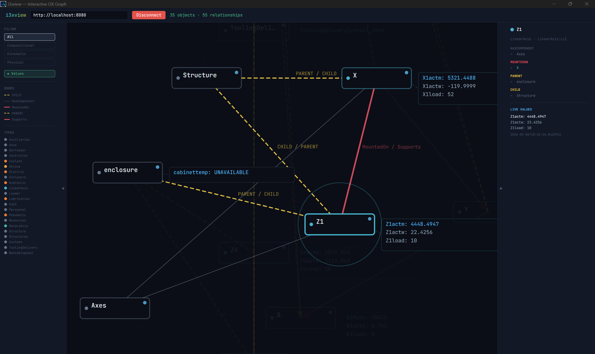
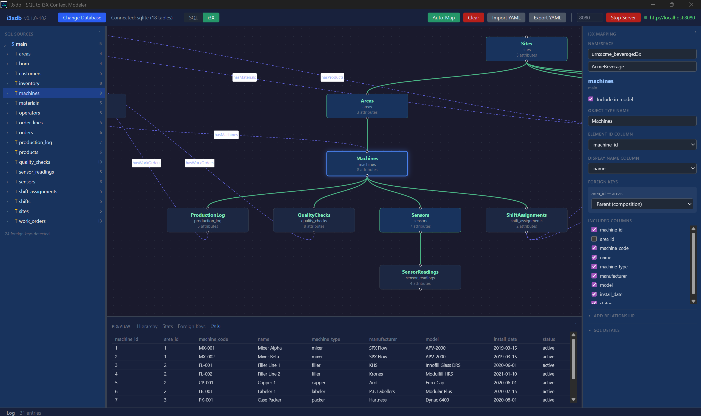
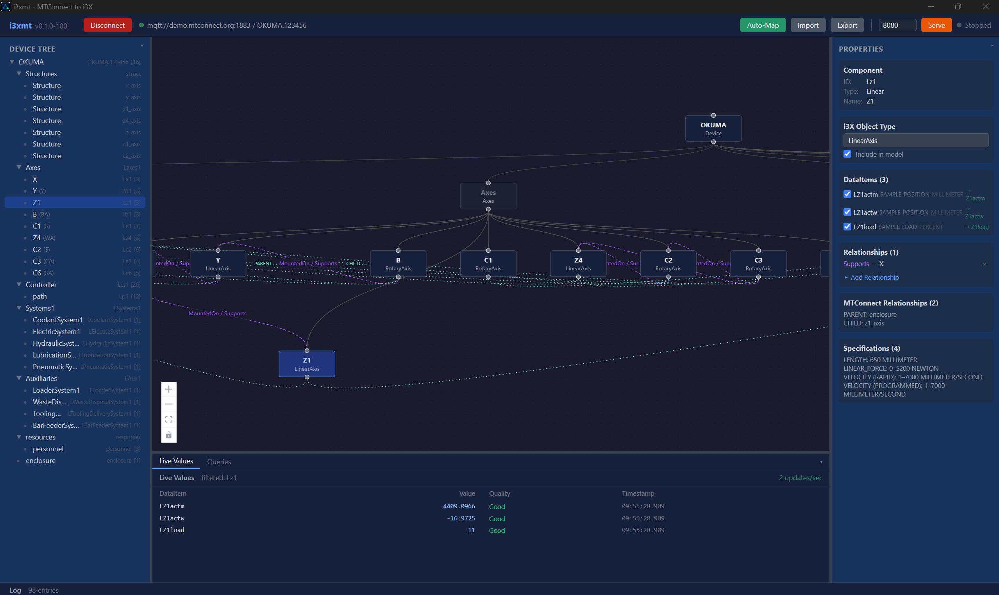
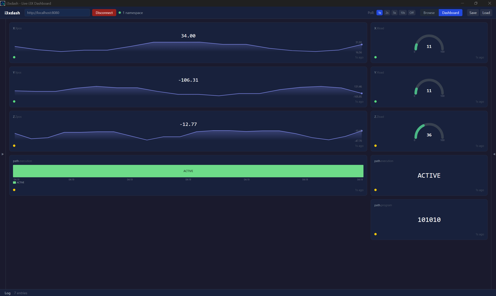
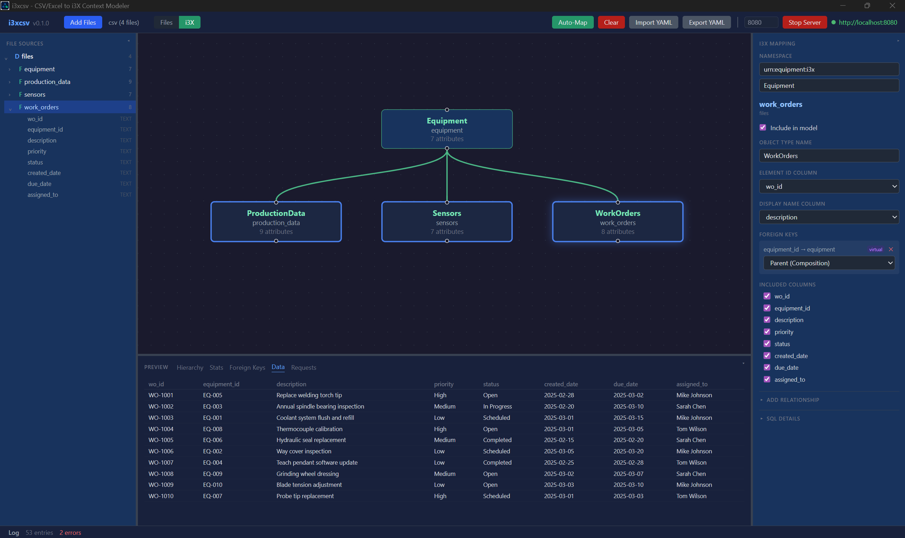

i3X · Industrial Information Interoperability Exchange
Turn any data source into a queryable API.
i3X transforms disparate industrial data sources — databases, MTConnect devices, flat files, and OPC-UA systems — into standardized, queryable REST APIs, with semantic models and no custom code.

Why i3X
Everything in one tool. Three steps.
i3X-compliant REST APIs
Expose standardized, queryable endpoints from legacy or heterogeneous systems — no custom code.
Auto schema discovery
One-click auto-mapping detects relationships and classifies data types for you.
Semantic models
Model manufacturing and operational data so downstream tools understand its meaning, not just its shape.
YAML & headless
Version-controlled configuration, deployable as headless servers via Docker or CLI.
Visualize & explore
Interactive graph visualization and real-time dashboards built in.
AI-powered search
BM25 search and graph traversal via MCP server integration, plus multi-server aggregation.
The i3X suite
A tool for every source.
i3xdb
SQL databases — MSSQL, PostgreSQL, MySQL, Snowflake, DB2, SQLite.
i3xmt
MTConnect MQTT brokers with live device data.
i3xcsv
CSV and Excel files with auto-detected relationships.
i3xopc
OPC-UA address spaces.
i3xview
Visual model designer and interactive graph view.
i3xdash
Real-time operational dashboards.
i3xrag
AI search and retrieval over your models via MCP.
i3X Explorer
Browse, query, and aggregate across many i3X servers.
See it
Real screens from the suite.




Explore the whole suite at i3x.net →
Make your data ask-able.
i3X is part of the Mr. IIoT toolkit — the integration layer that turns sources into standardized APIs.
More from the toolkit